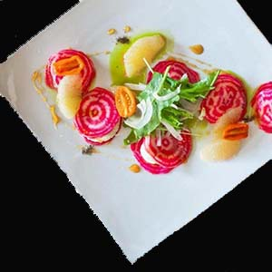
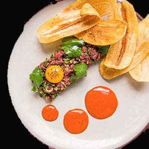
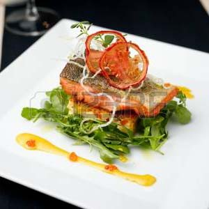

The Lakeside Ambience Restaurant is here. Upon arrival, it’s as though you’ve entered another world.
- 
- 
- 
Sleek New Design
Food presentation is the art of modifying, processing, arranging, or decorating food to enhance its aesthetic appeal. We are dedicated to have knowledge of food science, nutrition and diet and are responsible for preparing meals that are as pleasing to the eye as well as to the palate. After restaurants, their primary places of work include delicatessens and relatively large institutions such as hotels and hospitals. The visual presentation of foods is often considered by chefs at many different stages of food preparation, from the manner of tying or sewing meats, to the type of cut used in chopping and slicing meats or vegetables, to the style of mold used in a poured dish. The food itself may be decorated as in elaborately iced cakes, topped with ornamental sometimes sculptural consumables, drizzled with sauces, sprinkled with seeds, powders, or other toppings, or it may be accompanied by edible or inedible garnishes.
Historically, the presentation of food has been used as shows of wealth and power. Such displays often emphasize the complexity of a dishes composition as opposed to its flavors. For instance, ancient sources recall the hosts of Roman banquets adding precious metals and minerals to food in order to enhance its aesthetic appeal. Additionally, Medieval aristocrats hosted feasts involving sculptural dishes and shows of live animals. These banquets existed to show the culture and affluence of its host, and were therefore tied to social class. Contemporary food aesthetics reflect the autonomy of the chef, such as in nouvelle cuisine and Japanese bento boxes. Dishes often involve both simplistic and complex designs. Some schools of thought, like French nouvelle cuisine, emphasize minimalism while others create complicated compositions based on modern aesthetic principles. Overall, the presentation of food reflects societal trends and beliefs.
Thousands of flavors in one place, with modern design sure to impress.
Delectable Dining
We have an amazing staff that work around the clock preparing some of the highest quality campus dining food you will find anywhere in the country. We thought you might want to learn more about our master team behind this operation.
Designed for Ingredients
The idea was to create fresh and modern cuisine that would cater to the diverse demographics of the area. Taking some of our favorite foods from growing up, then adding unique twists, we developed our first menu in October 2000. With the help of local artists, we were able to transform our warehouse space into a comfortable, uniquely urban atmosphere in a sea of industrial buildings.
Handcrafted from Experience
As one of the first establishments, we have remained a favorite of locals over the years. We have also been fortunate enough to host many world-renowned and entertainers over the years — you never know who you might see spinning here! We have served patrons across and beyond. Visit us from all surrounding areas.
Behind is a sophisticated, expert construction that is elegant, thoughtful and clear.
Hours of Operation
Tue - Sat | Lunch Hours: 11:00 AM - 3:00 PM
Tue - Sat | Dinner Hours: 5:00 PM - 1:00 AM
Tue - Sat | Happy Hour: 5 PM - 6:30 PM
Restaurant Location
1884 SHIRLEY AVE. WEST CHICAGO, IL 60185
Reviews

Amazing food, completely delicious!
The food was absolutely wonderful, from preparation to presentation, very pleasing. We especially enjoyed the special bar drinks, the cucumber/cilantro infused vodka martini and the K&P Aquarium was great (even took photos so we could try to replicate at home).